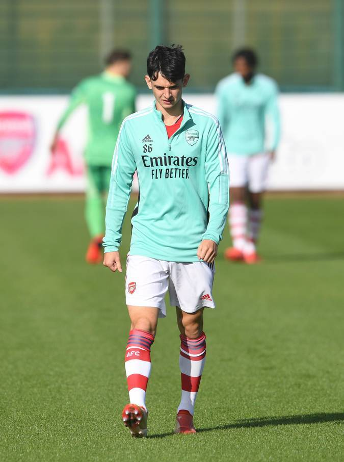
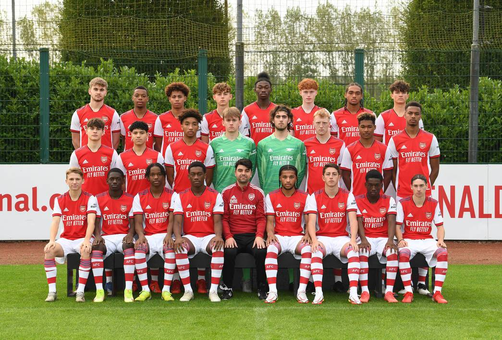
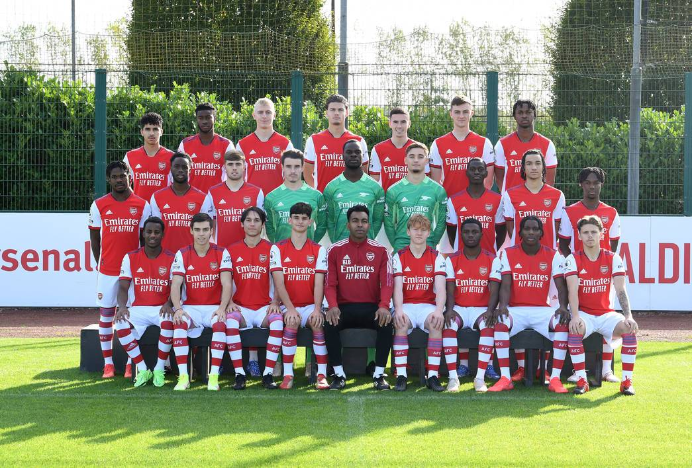
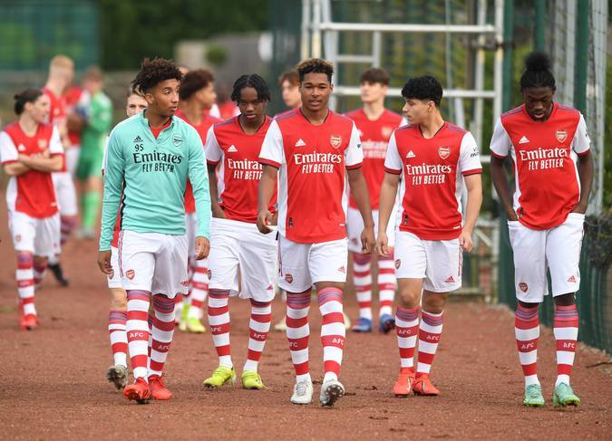

Behind the scenes at the academy photocall

Charlie Patino

U-18

U-23

Road to pitch
It was academy photocall day at London Colney on Monday!
After Under-18s slipped to their first league defeat of the season on Saturday they posed for their official team photos for the 2021/22 season.
Youngsters have the chance to bounce back on Saturday when they host Crystal Palace at London Colney. The game is set to kick-off at 11am (UK time).
Under-23s returned to winning ways in the Premier League 2 on Friday night as they ran out 4-0 winners over Everton at Meadow Park. They also posed for their official team photos for the 2021/22 season.
Club photographer was there and sent back these exclusive images.
Izvor: Arsenal.com